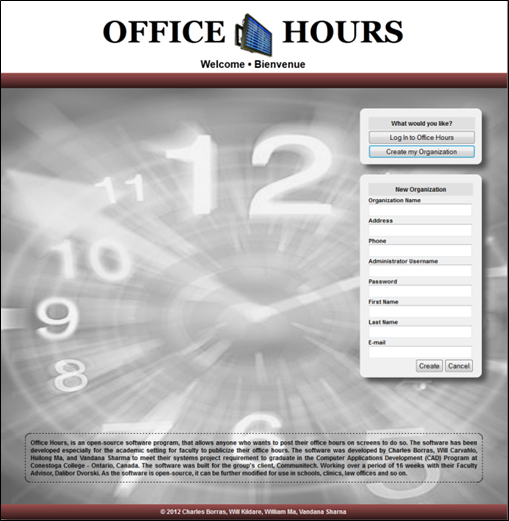

Once you log into the User Control Panel, the following options can be accessed by the User: Schedule Maker, My Schedule, Sign (In/Out), Change Password, Help, Log Out. If the User makes a schedule, he can add date, hours, branch, location in his profile or the User has an additional option to copy a schedule from the previous month. If the User selects, My Schedule, he can view his schedule and add a day in his existing schedule. If the User selects the Sign (In/Out) option, the User can sign in or sign out. If the User selects Change/Password, the User has the capability of changing the User’s password.

Created with the Personal Edition of HelpNDoc: Free PDF documentation generator